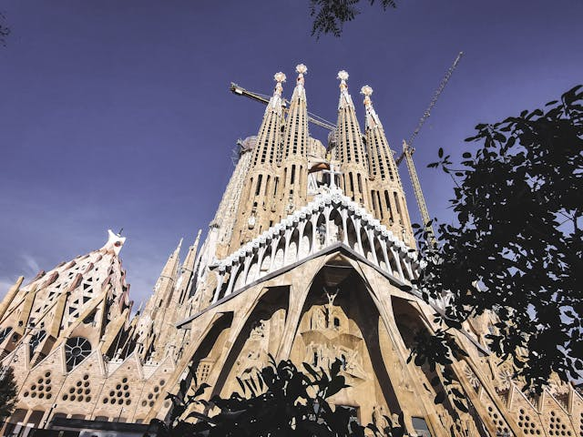

El Nacional
Enjoy traditional recipes from the Iberian Peninsula in a beautiful multi-space dining hall. Visitors can explore different menus and atmospheres without leaving the same location.
Learn MoreDiscover iconic landmarks, cultural attractions, and activities that make Barcelona a top travel destination.
Get StartedLocated near the city center, check out one of the most popular beaches in the city. Enjoy walking, swimming and relaxing by the Mediterranean Sea!
Everyone should experience a European soccer game at least once in their life. Whether you love soccer (or football as they call it in Europe) or not, attend an FC Barcelona match at Spotify Camp Nou!
This park is a spacious urban park that offers a peaceful break from the surrounding city. It's a great place for walking, picnicking and enjoying the outdoors.
Basílica de la Sagrada Família

Take a tour at Barcelona’s most iconic cathedral, Basílica de la Sagrada Família. Construction on the basilica began in 1882 and it remains the largest unfinished church in the world as well as the tallest. Designed by Antoni Gaudí, the structure is inspired by nature and blends Gothic and Art Nouveau styles that attracts millions each year making it an architectural marvel and key symbol of Barcelona.
Enjoy traditional recipes from the Iberian Peninsula in a beautiful multi-space dining hall. Visitors can explore different menus and atmospheres without leaving the same location.
Learn MoreA popular public market that features fresh produce, meats, seafood and a great spot for visitors to try local flavors and experience the city’s food culture!
Learn More